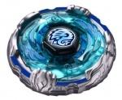

Kreis Cygnus 145WD
| Kreis Cygnus 145WD | |
|  | |
| Number: | BB-124 |
|---|---|
| System: | Metal Fight Beyblade |
| Type: | Defense |
Contents
Face: Cygnus
- Weight: 1.05 grams
Cygnus is one of the 88 constellations in the sky. The mark on this Face illustrates both a swan with a few extra shapes, but also a soldier's head with a helmet when viewed on the other side.
4D Clear Wheel: Cygnus
- Weight: 3.22 grams
Two swans form this Clear Wheel. Unlike a real swan however, the head is disproportionate to the body of the wings. Cygnus's original colour is clear turquoise with blue highlights from the stickers which line up the feathers and the surroundings of the Face.
4D Metal Wheel: Kreis
- Weight: 42.62 grams
Kreis was meant to introduce the gimmick of a relatively free-spinning Metal Frame, but it was released after Diablo Nemesis, which shares its gimmick in one of its modes. This Metal Wheel is incredibly circular, hence its name: "kreis" means "circle" in German.
Metal Frame
- Weight: 21.58 grams
Most of the relief on this part is present on its upper side. Two sets of protrusions line up the Metal Frame to form a sort of façade or fortification. As such, the sides represent two engraved swans, and it is their heads and their wings that protrude upward. The heads are the smallest parts and they appear on each side of the Metal Frame. Each swan's wings spread out on either side of it, and the locations where both swan's wings touch constitute the other protrusions, which extend for a bigger portion of the circumference. The space between each shape can have blue stickers applied to it. The rest of the sides of Kreis's Metal Frame have additional relief made from engraved feathers, and superficial semi-circle holes in four places.
On its underside, this part is simply a hollowed circle. On its flat bottom, swirly patterns are engraved all over, and a short wall follows its circumference.
In Defense Mode, the Metal Frame is partially free-spinning. In fact, this gimmick is called "sliding". It can only move back and forth for approximately 90°. On the underside of the Metal Frame are four small squares evenly placed around its inner hole. The Core also has four similar squares, and the way the Metal Frame is positioned on the Core, it can rotate freely until one of its cubes meet one of the Core's. At that point, it could only rotate in the other direction back to the next square. The Metal Frame can additionally absorb hits thanks to the free movement. This sliding is surprisingly smooth even though there are no other materials than the metal the parts are made of.
As is often the case with 4D Metal Wheels, Attack Mode is accomplished by flipping the Metal Frame and placing it back on the Core in this new position. This shows the Metal Frame's underside which is still very circular and only has the even, small wall at its circumference as Attack points. The Clear Wheel is slightly more exposed in Attack Mode. The protrusions that are the heads and the wings engraved on the Metal Frame fit perfectly in the holes of the Core in this mode, which prevents it from rotating in any way.
Core
- Weight: 21.04 grams
Kreis's Core is banal except for some shapes that are meant to embrace those of the Metal Frame's protrusions when it is in Attack Mode. Furthermore, it has four small cubes of metal in its inner part that offer a given, limited space for the Metal Frame to rotate in Defense Mode.
Track: 145
| Weight: | 1.47 grams | Full Width: | 20 mm | Minimum Width: | 18 mm | Height: | 14.50 mm |
145, along with its variants (C145, DF145, etc.), was once the highest Track available, until the 230 Track was released with Flame Byxis. It can be used in Stamina customs to great effect due to its tall height, which allows for more wobbling as the Beyblade loses its spin velocity. However, gimmick-paired Tracks like BD145 have immensely outclassed their original bare variant, on top of several taller gimmick Tracks surpassing 145 as well against heavy, mid-height Attackers. Even in Stamina battles, 145 does not offer enough balance: Tracks like AD145 and W145 provide a good center of gravity, and aid with a slight downforce to maintain stability.
Bottom: Wide Defense
| Weight: | 0.7 gram | Full Width: | 15.53 mm | Tip Width: | 14.17 mm | Full Height: | 8.92 mm | Tip Height: | 6.75 mm | Tip Angle: | 40° |
Wide Defense, as its name implies is one of the widest of the ?Defense? series of Bottoms (D, SD, WD, PD, EWD). This brings numerous advantages, but also some disadvantages when compared to the other ?Defense? Bottoms, specifically D. The advantages include its ability for abnormally long precession times due to its massive width that reaches the edge of the Bottom's perimeter. This allows it to wobble at a significantly larger angle for a longer period of time than D, and at a much lower spin rate. However, depending on the position of the Beyblade using WD and the spin rate of the opponent, this can be disadvantageous because of how easy it becomes to knock over the precessing WD custom. This low spin rate towards the end of the battle is created because in the process of wobbling at such a large angle, more friction is made with the stadium floor, thus decreasing its Stamina. Nevertheless, this more often an advantage than it is a disadvantage.
Newer parts such as CS, EDS and B:D have overshadowed WD to some degree: CS and EDS due to their ability to be paired with the popular BD145 Track without scraping, and B:D because of its height and even longer precession times, but WD is still one of the best pure Stamina Bottoms available. However, when selecting high Tracks such as TH170 and 230, WD's tendency to wobble at larger angles should be kept in mind, as its extreme precession can often become problematic.
Although the name suggests Defensive characteristics, WD does not possess any inherent defensive qualities. However, its proficiency can be increased significantly when facing left-spin Attackers through the utilization of the Weak Shooting technique.
Use in Stamina customization
WD is arguably the best of the ?Defense? series of Bottoms, and its effectiveness can be utilized in the custom Phantom Bull AD145WD.
Other Versions
No other versions of this Beyblade were released.